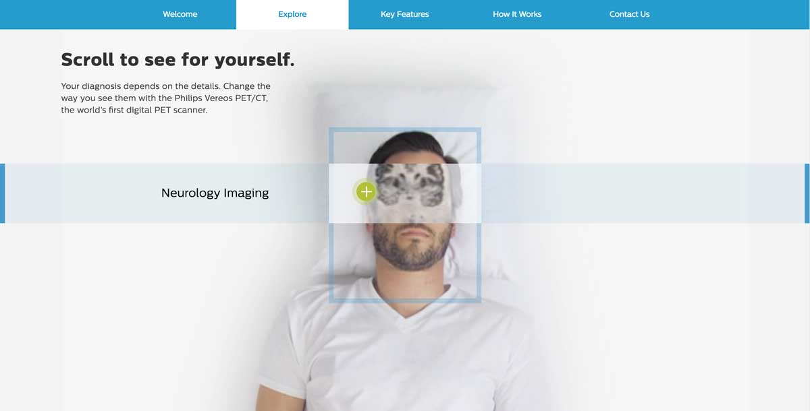

Philips had new scanning and imaging technology to showcase both online and at tradeshows. They needed an informational experience that people could easily learn from, but could also be used as a helpful presentation tool or aide.
Technology:
- Grunt
- SASS
- Javascript
My roles:
- Front End Developer
